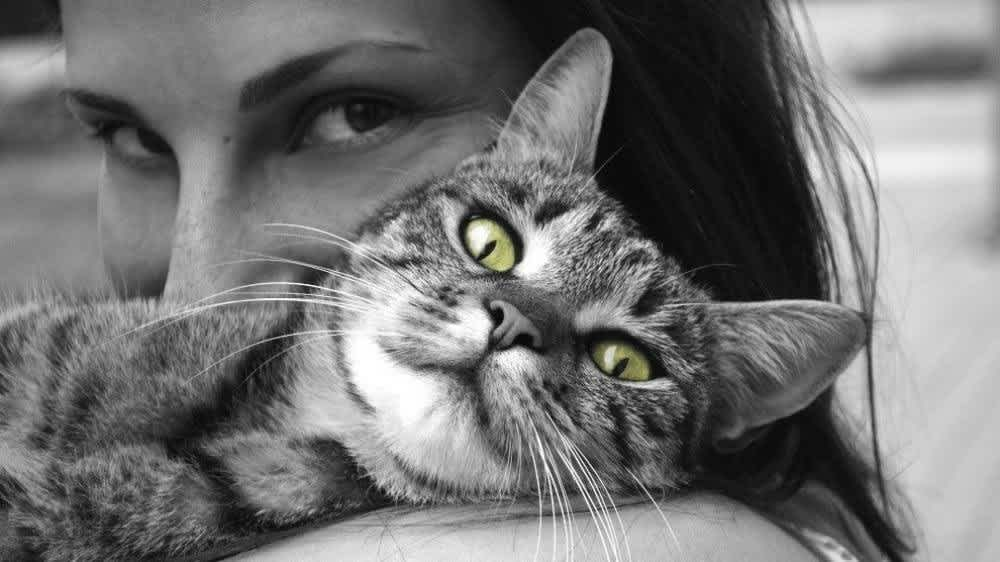
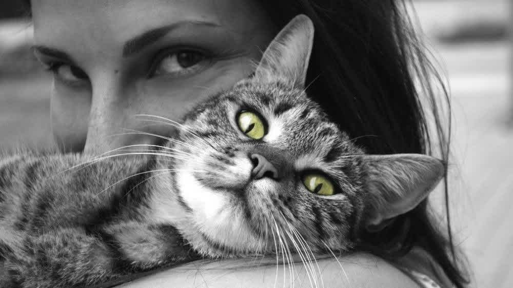

¿Por qué los osos perezosos son tan lentos? La principal razón por la cuál estos animales son tan lentos es para poder pasar desapercibidos. Con esto evitan a sus depredadores naturales, como las águilas y jaguares que de otro modo los encontrarían fácilmente.El perezoso bayo o Oso perezoso (Bradypus variegatus), es una especie de perezoso propia de Centro y Sudamérica. El perezoso tiene piel grisácea castaña a beige, y es muy gruesa. La cabeza del perezoso es redonda, la nariz achatada y las orejas no visibles. La cola es muy pequeña.Estos animales tienen una altura que puede variar entre los 40 y los 75 cm. Cabeza redonda, nariz achatada y las orejas imperceptibles son algunas de las características de estos animalitos. Las extremidades son largas y terminan en dedos que se encuentran unidos y con potentes garras. La cola del perezoso es corta. Los perezosos, como su nombre indica, tienen poca necesidad de apresurarse. La mayor parte del tiempo viven en lo alto de las ramas de bosques que se extienden a través de Centroamérica y Sudámerica, y solo bajan al suelo para defecar. Sin duda, llevan una vida en cámara lenta.